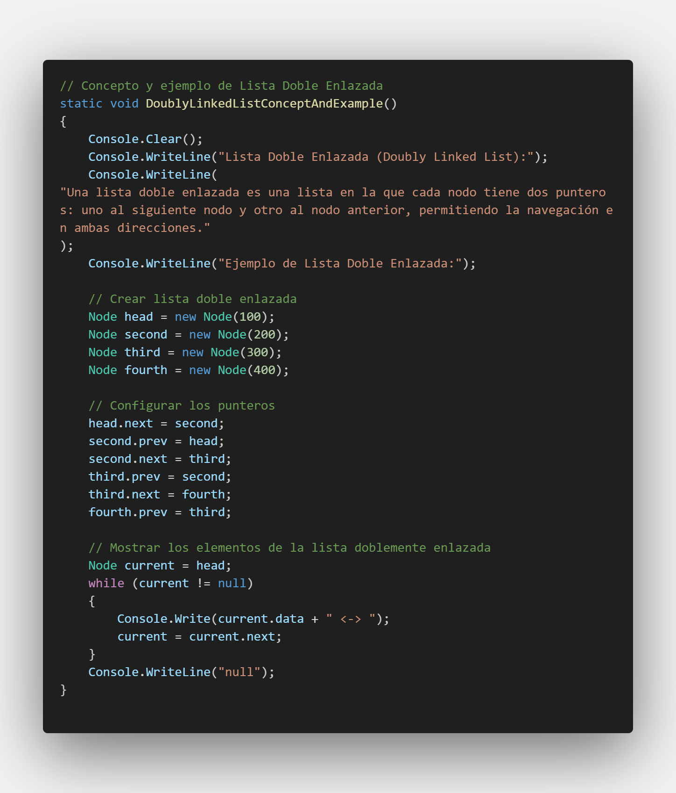
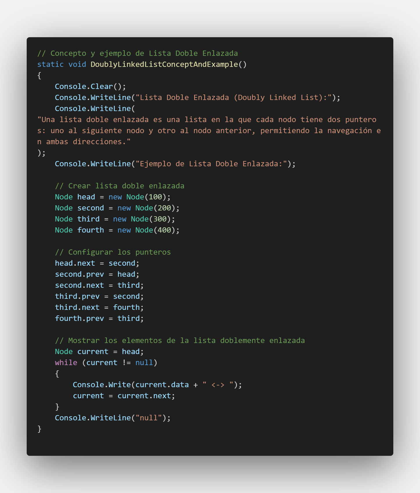

Lista Doble Enlazada
Una lista doble enlazada es una estructura de datos donde cada nodo tiene punteros al siguiente y al anterior nodo.
100 <-> 200 <-> 300 <-> 400 <-> null
Una lista doble enlazada es una estructura de datos donde cada nodo tiene punteros al siguiente y al anterior nodo.
100 <-> 200 <-> 300 <-> 400 <-> null